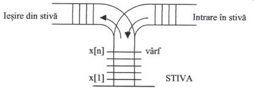

Ce este o stivă?
O stivă este o listă la care elementele pot fi inserate şi şterse la un singur capăt (vârful stivei).Elementele sunt şterse în ordine inversă punerii lor în stivă, motiv pentru care o stivă urmează principiul LIFO (Last In First Out)- ultimul introdus este primul şters. De aceea o stivă este folosită uneori pentru inversarea ordinii unui şir de valori. Stiva se foloseşte pentru a implementa apelul de funcţie şi recursivitatea.


În informatică, stiva are un rol deosebit. Pentru a înțelege mecanismele de bază ale programării (cum ar fi funcțiile sau recursivitatea), este necesară cunoașterea noțiunii de stivă. Ea poate fi folosită atunci când este necesară memorarea unor informații, iar apoi regăsirea acestora într-o anumită ordine."